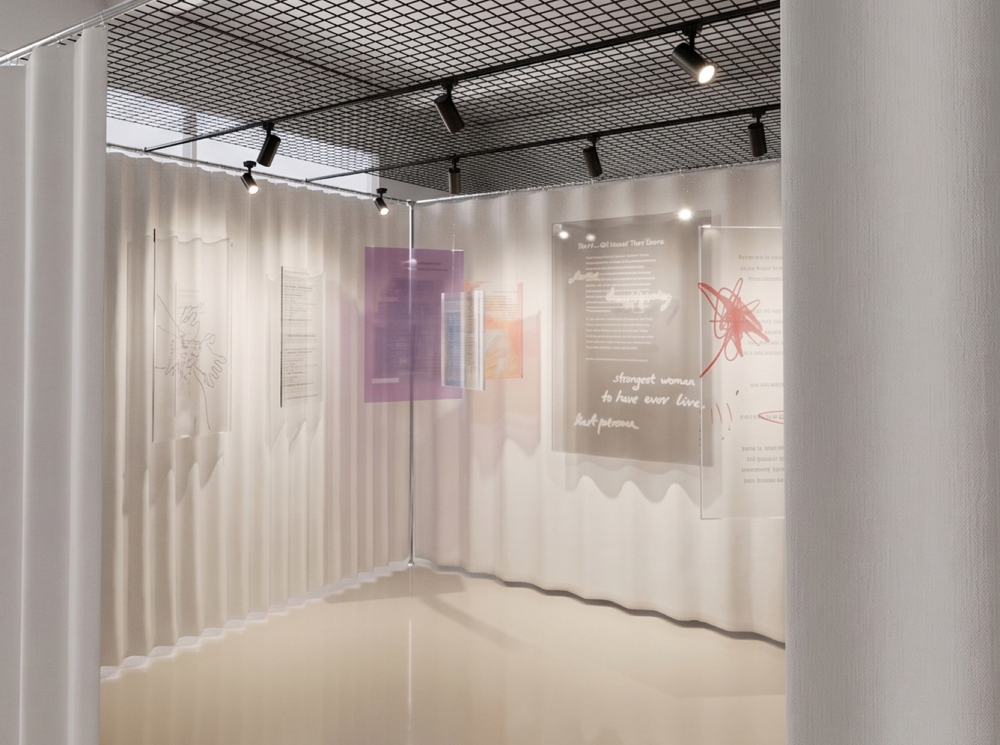
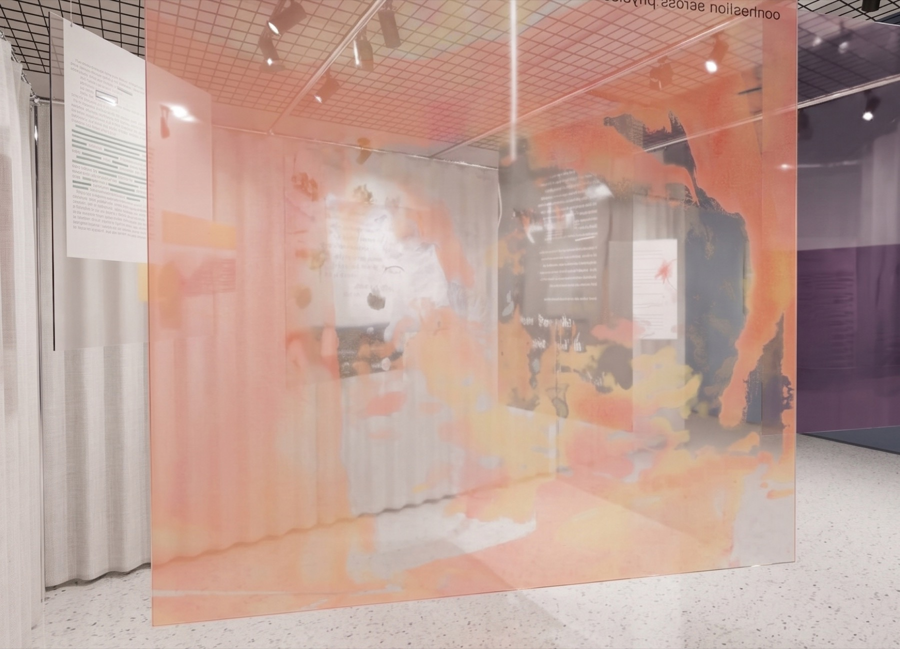

01 / o projekcie
Jedna na raz.
Chmury emocji.
Brak.
Instalacja skupia się na afekcie wywołanym stratą – zarówno tą mierzalną, dokonaną, jak i subiektywnym poczuciem niespodziewanego braku. To przytłaczający zmysły stan zawieszony gdzieś w pobliżu melancholii i żalu, w którym jednak pojawiają się przebłyski złości, nadziei czy wdzięczności – ponieważ żadne doświadczenie nigdy nie jest zero-jedynkowe. Przedstawiam ten gęsty stan, przywołując teksty z różnych źródeł, tworząc z nich wizualną interpretację stojących za nimi nagich emocji.
Poprzez wyciąganie poszczególnych słów, ujawniam mój własny filtr „czytania” i przeżywania osobistych doświadczeń – opowiadam o tym, jak sama przepuszczam je przez własną empatię i wrażliwość. Teksty pochodzą z rozmaitych źródeł, bo mimo że mamy na swoje przeżycia różne nazwy i osobiście je ubieramy w różne zachowania, to w zarodku bazujemy na tych samych emocjach. Emocje pojawiają się i znikają, w tej pracy zachęcam do dostrzeżenia ich i podkreślam, że wybór tego, na czym się skupiamy, jak to interpretujemy i wykorzystujemy, należy do nas. Wizualnie przez rozmycia, powtarzalność, nawarstwienia i brutalność ekspresji podkreślam ulotność tych zdarzeń i szum przetwarzania ich.

